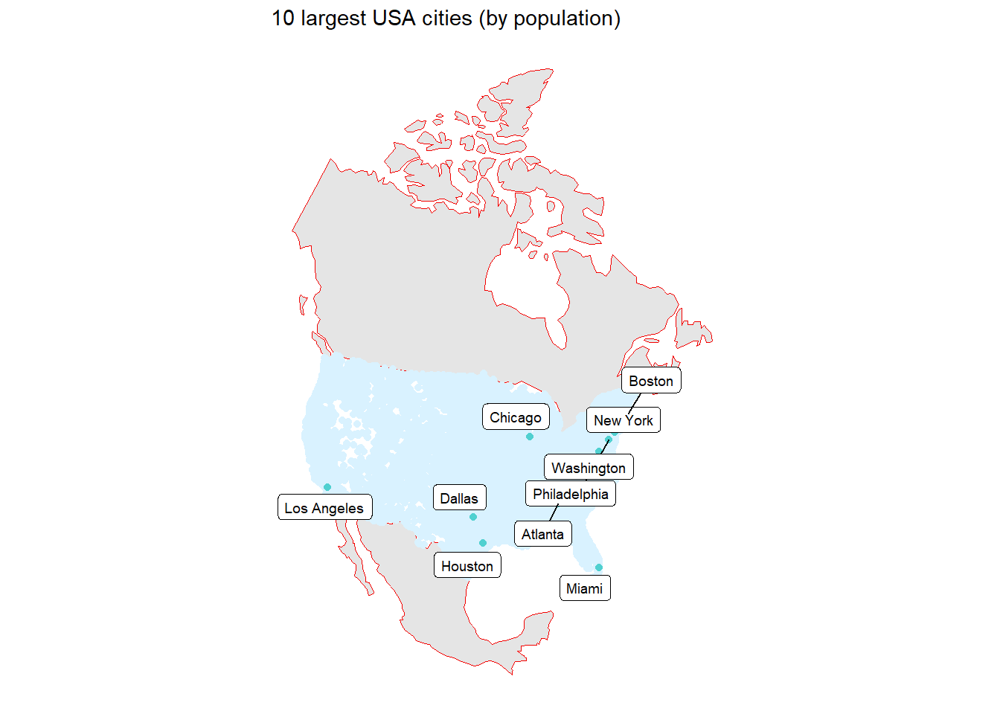
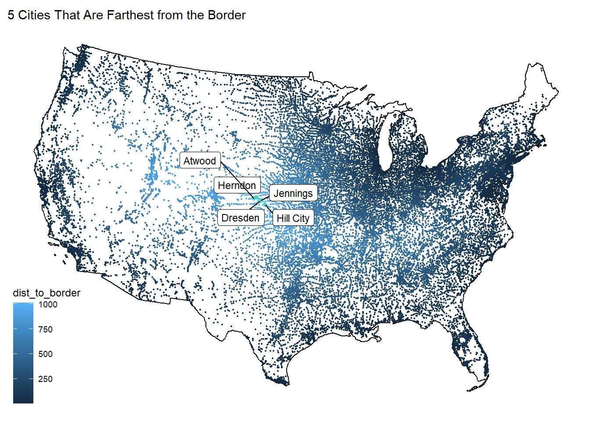
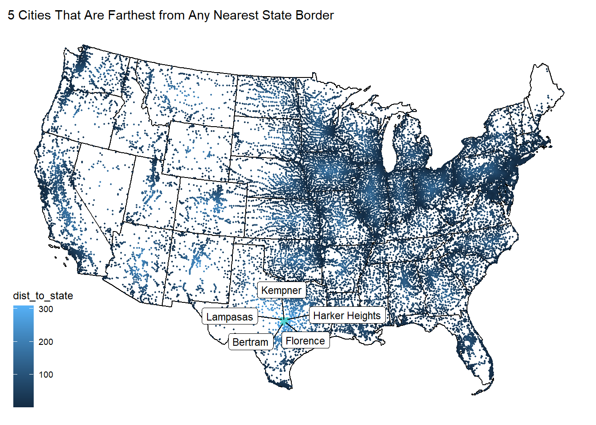
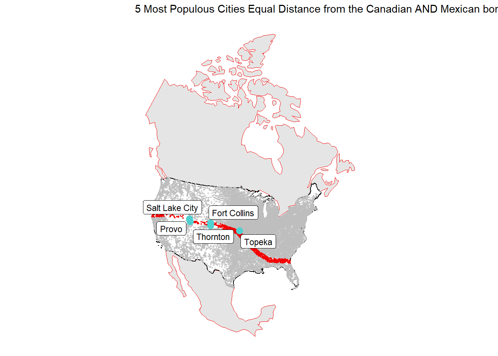
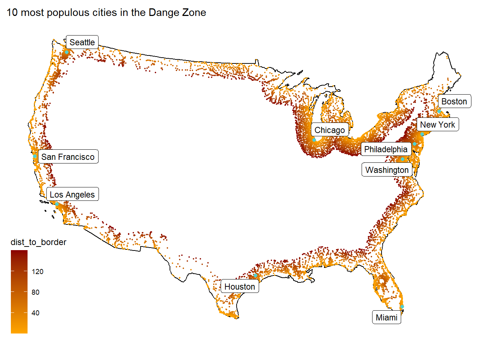

library(tidyverse)
library(sf)
library(units)
library(rnaturalearth)
library(knitr)
library(USAboundaries)
library(ggrepel)
library(gghighlight)
# Question 1
# 1.1 - Define a Projection
eqdc = '+proj=eqdc +lat_0=40 +lon_0=-96 +lat_1=20 +lat_2=60 +x_0=0 +y_0=0 +datum=NAD83 +units=m +no_defs'
region = data.frame(region = state.region, state_name = state.name)
# 1.2 - Get USA state boundaries
USConus = USAboundaries::us_states() %>%
filter(!name %in% c("Puerto Rico", "Alaska", "Hawaii"))
#1.3 - Get country boundaries for Mexico, the United States of America, and Canada
Boundaries = rnaturalearthdata::countries110 %>%
st_as_sf() %>%
filter(name %in% c("Mexico", "United States of America", "Canada"))
# 1.4 - Get city locations from the CSV file
UScities = readr::read_csv("data/uscities.csv") %>%
filter(!state_name %in% c("Puerto Rico", "Alaska", "Hawaii")) %>%
st_as_sf(coords = c("lng", "lat"), crs = 4326) %>%
st_filter(USConus, .predicate = st_intersects)
USConus = st_transform(USConus, eqdc)
Boundaries = st_transform(Boundaries, eqdc)
UScities = st_transform(UScities, eqdc)# Question2
# 2.1 - Distance to USA Border (coastline or national) (km)
Border = st_union(USConus) %>%
st_cast("MULTILINESTRING")
DistoB = UScities %>%
mutate(dist_to_border = st_distance(UScities, Border),
dist_to_border = units::set_units(dist_to_border, "km"),
dist_to_border = units::drop_units(dist_to_border))
FurthesttoB = DistoB %>%
slice_max(dist_to_border, n = 5) %>%
select(city, state_name, dist_to_border) %>%
st_drop_geometry()
knitr::kable(FurthesttoB,
caption = "Furtherest Cities to Border",
col.names = c("City Name", "State", "Distance(km)"))| City Name | State | Distance(km) |
|---|---|---|
| Dresden | Kansas | 1012.317 |
| Herndon | Kansas | 1007.750 |
| Hill City | Kansas | 1005.147 |
| Atwood | Kansas | 1004.734 |
| Jennings | Kansas | 1003.646 |
# 2.2 - Distance to States (km)
Border2 = st_combine(USConus) %>%
st_cast("MULTILINESTRING")
DistoB2 = UScities %>%
mutate(dist_to_state = st_distance(UScities, Border2),
dist_to_state = units::set_units(dist_to_state, "km"),
dist_to_state = units::drop_units(dist_to_state))
FurthesttoS = DistoB2 %>%
slice_max(dist_to_state, n = 5) %>%
select(city, state_name, dist_to_state) %>%
st_drop_geometry()
knitr::kable(FurthesttoS,
caption = "Furtherest Cities to the States",
col.names = c("City Name", "State", "Distance(km)"))| City Name | State | Distance(km) |
|---|---|---|
| Lampasas | Texas | 308.9216 |
| Bertram | Texas | 302.8190 |
| Kempner | Texas | 302.5912 |
| Harker Heights | Texas | 298.8125 |
| Florence | Texas | 298.6804 |
# 2.3 - Distance to Mexico (km)
BorderMexico = Boundaries %>%
filter(name %in% c("Mexico")) %>%
st_cast("MULTILINESTRING")
DistoBMexico = UScities %>%
mutate(dist_to_mexico = st_distance(UScities, BorderMexico),
dist_to_mexico = units::set_units(dist_to_mexico, "km"),
dist_to_mexico = units::drop_units(dist_to_mexico))
FurthesttoM = DistoBMexico %>%
slice_max(dist_to_mexico, n = 5) %>%
select(city, state_name, dist_to_mexico) %>%
st_drop_geometry()
knitr::kable(FurthesttoM,
caption = "Furtherest Cities to Mexico",
col.names = c("City Name", "State", "Distance(km)"))| City Name | State | Distance(km) |
|---|---|---|
| Caribou | Maine | 3250.334 |
| Presque Isle | Maine | 3234.570 |
| Calais | Maine | 3134.348 |
| Eastport | Maine | 3125.624 |
| Old Town | Maine | 3048.366 |
# 2.4 - Distance to Canada (km)
BorderCanada = Boundaries %>%
filter(name %in% c("Canada")) %>%
st_cast("MULTILINESTRING")
DistoBCanada = UScities %>%
mutate(dist_to_canada = st_distance(UScities, BorderCanada),
dist_to_canada = units::set_units(dist_to_canada, "km"),
dist_to_canada = units::drop_units(dist_to_canada))
FurthesttoC = DistoBCanada %>%
slice_max(dist_to_canada, n = 5) %>%
select(city, state_name, dist_to_canada) %>%
st_drop_geometry()
knitr::kable(FurthesttoC,
caption = "Furtherest Cities to Canada",
col.names = c("City Name", "State", "Distance(km)"))| City Name | State | Distance(km) |
|---|---|---|
| Guadalupe Guerra | Texas | 2206.455 |
| Sandoval | Texas | 2205.641 |
| Fronton | Texas | 2204.784 |
| Fronton Ranchettes | Texas | 2202.118 |
| Evergreen | Texas | 2202.020 |
# Question3
# 3.1 - Data
LargeUScities = UScities %>%
slice_max(population, n = 10)
ggplot()+
geom_sf(data = Boundaries, aes(), col = "#f30100", size = 0.3) +
geom_sf(data = DistoB2, col = "#d9f2ff", lty = 2) +
geom_sf(data = LargeUScities, col = "#50d0d0", size = 1.5) +
ggthemes::theme_map() +
labs(title = "10 largest USA cities (by population)",
x = "Longitude",
y = "Latitude") +
ggrepel::geom_label_repel(
data = LargeUScities,
aes(label = city, geometry = geometry),
stat = "sf_coordinates",
size = 2.5)
# 3.2 - City Distance from the Border
FurthesttoB3 = DistoB %>%
slice_max(dist_to_border, n = 5) %>%
select(city, state_name, dist_to_border)
ggplot() +
geom_sf(data = Border, aes()) +
geom_sf(data = DistoB, aes(col = dist_to_border), size = 0.3) +
geom_sf(data = FurthesttoB3, col = "#50d0d0") +
ggthemes::theme_map() +
labs(title = "5 Cities That Are Farthest from the Border",
x = "Longitude",
y = "Latitude") +
ggrepel::geom_label_repel(
data = FurthesttoB3,
aes(label = city, geometry = geometry),
stat = "sf_coordinates",
size = 3)
# 3.3 - City Distance from Nearest State
FurthesttoS3 = DistoB2 %>%
slice_max(dist_to_state, n = 5) %>%
select(city, state_name, dist_to_state)
ggplot() +
geom_sf(data = Border2, aes()) +
geom_sf(data = DistoB2, aes(col = dist_to_state), size = 0.3) +
geom_sf(data = FurthesttoS3, col = "#50d0d0") +
ggthemes::theme_map() +
labs(title = "5 Cities That Are Farthest from Any Nearest State Border",
x = "Longitude",
y = "Latitude") +
ggrepel::geom_label_repel(
data = FurthesttoS3,
aes(label = city, geometry = geometry),
stat = "sf_coordinates",
size = 3)
# 3.4 - Equidistant boundary from Mexico and Canada
Equidis = UScities %>%
mutate(MCdis = abs(DistoBMexico$dist_to_mexico - DistoBCanada$dist_to_canada)) %>%
select(MCdis, city, state_name, population)
LargeCities = Equidis %>%
filter(MCdis <= 100) %>%
slice_max(population, n = 5)
ggplot() +
geom_sf(data = Boundaries, aes(), col = "#f30100", size = 0.3) +
geom_sf(data = Border) +
geom_sf(data = Equidis, col = "#f30100", size = 0.3) +
geom_sf(data = LargeCities, col = "#50d0d0", size = 3) +
gghighlight::gghighlight(MCdis <= 100) +
ggthemes::theme_map() +
labs(title = "5 Most Populous Cities Equal Distance from the Canadian AND Mexican border ± 100 km.",
x = "Longitude",
y = "Latitude") +
ggrepel::geom_label_repel(
data = LargeCities,
aes(label = city, geometry = geometry),
stat = "sf_coordinates",
size = 3)
#Question 4
# 4.1 - Quantifing Border Zone (Matches ACLU)
Totalpop = DistoB %>%
mutate(totalpop = sum(population)) %>%
select(id, totalpop) %>%
st_drop_geometry()
Dangerpop = DistoB %>%
filter(dist_to_border <= 160) %>%
mutate(dangerpop = sum(population)) %>%
left_join(Totalpop, by = "id")
numbers = length(Dangerpop$city)
Zone = Dangerpop %>%
mutate(number = numbers) %>%
select(number, dangerpop, totalpop) %>%
st_drop_geometry() %>%
mutate(percent = dangerpop / totalpop) %>%
select(number, dangerpop, percent) %>%
head(1)
knitr::kable(Zone, caption = "Quantifing Border Zone",
col.names = c("Cities Number", "Population", "Percentage of Total"))| Cities Number | Population | Percentage of Total |
|---|---|---|
| 12255 | 259876456 | 0.6543463 |
# 4.2 - Mapping Border Zone
ZoneCities = DistoB %>%
filter(dist_to_border <= 160)
PopCities = ZoneCities %>%
slice_max(population, n = 10)
ggplot() +
geom_sf(data = ZoneCities, aes(col = dist_to_border), size = 0.3) +
geom_sf(data = PopCities, col = "#50d0d0") +
geom_sf(data = Border) +
scale_color_gradient(low = "orange", high = "darkred") +
gghighlight(dist_to_border <= 160) +
ggthemes::theme_map() +
labs(title = paste("10 most populous cities in the Dange Zone")) +
ggrepel::geom_label_repel(
data = PopCities,
aes(label = city, geometry = geometry),
stat = "sf_coordinates",
size = 3)